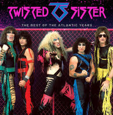

twisted sister
Twisted Sister se formó en 1972
En Long Island, Nueva York
Twisted Sister, (Español: La Hermana Malvada) fue un grupo estadounidense de shock rock, heavy y hair metal, formado en la ciudad de Nueva York en 1973.
El grupo fusiona las tácticas impactantes de Alice Cooper, el humor rebelde de la nueva ola del metal británico (NWOBHM) y el extravagante maquillaje de Kiss. El grupo tiene una imagen de Glam, aderezada con un punto deliberadamente vulgar; su sonido se podría comparar en ocasiones con otras pioneras bandas de Glam metal como Pantera en sus inicios o Ratt, el vocalista del grupo, dijo en una entrevista: "Yo no pienso que Twisted Sister es glam, porque eso implica glamour, y nosotros no somos glamorosos. Deberíamos ser llamados "Hor" ("Hid"), porque somos horrendos (hideous)".
Aunque la banda fue formada por el guitarrista Jay Jay French en 1973, todas sus canciones fueron escritas por el vocalista, Dee Snider. Los éxitos del grupo incluyen "We're Not Gonna Take It" y "I Wanna Rock", ambos popularizados por la continua aparición en MTV en los años 80s. Muchas de las canciones de la banda exploran los conflictos de padres contra hijos y critican el sistema de educación.
Historia
Inicio y Under the Blade (1973 - 1983)
Artículo principal: Under the Blade
Twisted Sister nace el 14 de febrero de 1973, cuando el guitarrista Jay Jay French se unió a una banda llamada Silverstar. En aquellos días, French usaba el pseudónimo Johnny Heartbreaker. Él había tocado previamente en algunas bandas locales e hizo una prueba para Wicked Lester, el grupo que posteriormente se convirtió en Kiss. A sugerencia del vocalista de Silverstar, Michael Valentine, la banda se cambió de nombre a Twisted Sister. Valentine y el guitarrista Billy Diamond dejaron la banda pronto, por lo que French se quedó como guitarrista y también vocalista.
En 1975, Eddie "Fingers" Ojeda, un amigo de colegio de French, se unió como segunda voz y segunda guitarra. Él había grabado ya antes con una banda de Nueva York llamada SPV. Kevin John Grace reemplazó a Mel "Starr" Anderson en la percusión. El bajista Kenny Neill (Kenneth Harrisson-Neill) completó la banda. La banda siguió una dirección de glam rock, influenciados por David Bowie, Mott the Hoople, Humble Pie, y New York Dolls. Tocaron en clubes locales sin mucho éxito hasta 1976.
En 1976, Dee Snider se unió a la banda como vocalista y principal compositor de las canciones. Después de reemplazar al baterista, Grace, con Tony Petri, el grupo tomó una dirección más metalera, influenciados por AC/DC, Queen, Led Zeppelin, Black Sabbath, y Alice Cooper, pero sin abandonar su imagen de glam. Aunque el glam ya no estaba de moda en aquellos tiempos, las habilidades excepcionales de Snider como líder de la banda llevaron al grupo a un considerable éxito local. Rompieron expectativas en la Región de los Tres Estados (Nueva Jersey, Nueva York y Connecticut) y su creciente número de fanes empezaron a tomar el nombre de S.M.F.F.O.T.S., de "Sick Motherfucking Friends Of Twisted Sister" (Enfermos Hijos de Puta Amigos de Twisted Sister). Más tarde lo acortaron a "S.M.F." de "Sick Mother Fuckers" (Enfermos Hijos de Puta).
Ninguna discográfica estaba interesada en la banda, así que en 1979 lanzaron el sencillo "I'll Never Grow Up Now" / "Under the Blade", en su propia discográfica "Twisted Sister Records", seguido por "Bad Boys (Of Rock & Roll)" / "Lady's Boy" en 1980. El legendario Eddie Kramer produjo ambos sencillos.
En este periodo, el grupo afrontó algunos cambios de miembros. El 31 de octubre de 1978, Neill se fue para convertirse en un "Cristiano re-bautizado", renegando de la actitud sacrílega e irrespetuosa hacia el cristianismo de la banda, según una entrevista con Snider. El técnico y amigo de la banda, Mark "The Animal" Mendoza, antes bajista de The Dictators, lo reemplazó. En diciembre de 1980, Petri se fue a Plasmatics y lo reemplazaron brevemente por Richie Teeter. Irónicamente, Teeter, antiguo miembro de The Dictators, fue reemplazado por "Fast" Joey Brighton, quien fue sustituido por A.J. Pero, del grupo Cities, otra banda sin discográfica pero con éxito local. Esta formación —Dee Snider, Jay Jay French, Eddie Ojeda, Mark Mendoza y A.J. Pero— vendría a ser considerada como la clásica del grupo.
Bajo la sugerencia de dos reporteros de las revistas Sounds y Kerrang!, "Twisted Sister" dejó Nueva York para buscar discográfica en el Reino Unido. Allí, en abril de 1982, finalmente consiguieron un contrato con Secret Records, una pequeña discográfica británica dedicada principalmente a la música punk. En junio de 1982, el grupo lanzó su primer EP, Ruff Cuts, en la discográfica Secret Records. Fue seguido pronto por su primer LP, Under the Blade, producido por Pete Way de UFO. A pesar de la baja calidad de producción, el álbum fue un éxito underground sorpresa en el Reino Unido, dándole a la banda suficiente reconocimiento para abrir para bandas de metal como Motörhead. El álbum tenía un sonido crudo de metal e incluía "Tear It Loose", una canción metalera muy rápida, ofreciendo un solo de guitarra por "Fast" Eddie Clarke de Motörhead. Otro sencillo, el futuro éxito "We're Not Gonna Take It", fue planeado para su lanzamiento, pero Secret Records quebró antes que Snider fuera capaz de completar la letra.
MUSICA FAVIROTA
We're not gonna take it
No, we ain't gonna take it
We're not gonna take it anymore
We've got the right to choose, and
There ain't no way we'll lose it
This is our life, this is our song
We'll fight the powers that be, just
Don't pick on our destiny, 'cause
You don't know us, you don't belong
We're not gonna take it
No, we ain't gonna take it
We're not gonna take it anymore
Oh, you're so condescending
Your call is never ending
We don't want nothin', not a thing from you
Your life is trite and jaded
Boring and confiscated
If that's your best, your best won't do
Woah-oh-oh
Woah-oh-oh
We're right (yeah)
We're free (yeah)
We'll fight (yeah)
You'll see (yeah)
Whoa-whoa, we're not gonna take it
No, we ain't gonna take it
We're not gonna take it anymore
We're not gonna take it
No, we ain't gonna take it
We're not gonna take it anymore
No way!
Woah-oh-oh
Woah-oh-oh
We're right (yeah)
We're free (yeah)
We'll fight (yeah)
You'll see (yeah)
We're not gonna take it
No, we ain't gonna take it
We're not gonna take it anymore
We're not gonna take it (no!)
No, we ain't gonna take it
We're not gonna take it anymore (just you try and make us)
We're not gonna take it (come on!)
No, we ain't gonna take it (you're all worthless and weak)
We're not gonna take it anymore (now drop and give me 20)
We're not gonna take it (a pledge pin)
No, we ain't gonna take it (on your uniform)
We're not gonna take it anymore